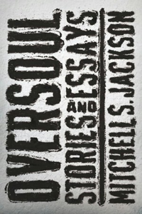

Mitchell Jackson, Oversoul (2012)
Content warning:
Discrimination and bigotry, gun violence, hate crimes, hate speech, incarceration, violence
Synopsis
Oversoul is a collection of interconnected stories by Mitchell S. Jackson set in Portland, Oregon. Through the lives of Black men and boys in Portland's historically Black neighborhoods, the collection explores family, friendship, identity, and community alongside challenges such as poverty, crime, and incarceration. Jackson's stories are linked by recurring characters and shared experiences, creating a multifaceted portrait of a city and the people shaped by it. Together, the stories examine both the difficulties and the resilience that characterize individual lives and communities across generations within the Portland area.
Essay
Oversoul is an important work of Oregon literature because it documents the experiences of Black Portlanders and highlights a community that has often been overlooked in representations of the state. Rather than focusing on Oregon's natural landscapes or rural communities, Mitchell Jackson centers the lives of people living in North and Northeast Portland, showing how place shapes identity, opportunity, and community.
The collection is rooted in Portland's historically Black neighborhoods, which function as more than a setting for the stories. Through interconnected narratives, Jackson portrays a community affected by economic inequality, crime, incarceration, and systemic racism while also emphasizing family relationships and neighborhood bonds. Stories such as "Magic" illustrate the pressures facing young Black men as they navigate expectations, violence, and limited opportunities. At the same time, the collection shows moments of friendship, humor, and support that reveal the strength of the community despite these challenges. This balance between hardship and resilience gives Oversoul much of its emotional impact.
The historical context of Portland is essential to understanding the collection. For much of Oregon's history, Black communities faced exclusion, discrimination, and restricted access to housing and employment. Portland's Albina district became the cultural center of Black life in the state, and Jackson's stories reflect the social realities that emerged from that history. References to incarceration, economic struggle, and neighborhood change demonstrate how larger historical forces shape the daily lives of the characters. Although Oversoul is not historical fiction, it offers insight into the legacy of racial inequality in Oregon and its continuing effects on urban communities.
Jackson's personal connection to Portland further strengthens the collection's significance. Born and raised in the city, he draws on an intimate knowledge of the neighborhoods and experiences he portrays. The stories feel grounded in real places and lived experiences, allowing readers to see aspects of Portland that are often absent from public narratives about the city. By focusing on characters whose voices are frequently marginalized, Jackson challenges common assumptions about Oregon culture and expands the range of stories represented in the state's literature.
The collection remains relevant because it complicates simplified narratives about Portland. While the city is often associated with progressive politics, environmentalism, and rapid growth, Oversoul highlights communities that have not always benefited equally from those developments. Through the experiences of its characters, the collection reveals the social and economic inequalities that continue to shape life in Portland while also celebrating the resilience of the people who call these neighborhoods home.
Within the broader canon of Oregon literature, Oversoulstands alongside works that use place to explore questions of identity, belonging, and community. However, Jackson's focus on Black urban life makes the collection distinctive. By documenting the experiences of a community that has played a significant role in Oregon's history, Oversoul expands our understanding of what Oregon literature can be and whose stories it can tell.
Author Bio
Mitchell S. Jackson is an award-winning author and journalist whose work often explores race, community, identity, and life in Portland, Oregon. Born and raised in Portland's historically Black neighborhoods, Jackson draws extensively on his experiences growing up in the city. He earned degrees from Portland State University and New York University and has taught creative writing at several institutions.
Jackson first gained national recognition with The Residue Years (2013), a semi-autobiographical novel set in Portland. His story collection Oversoul (2013) further established his reputation as a significant voice in contemporary literature. In 2021, he won the Pulitzer Prize for Feature Writing for his essay "Twelve Minutes and a Life," published in Runner's World. His memoir Survival Math: Notes on an All-American Family received widespread acclaim and won the 2021 National Book Critics Circle Award.
Further Reading
Mitchell Jackson, The Residue Years (2013)
Mitchell Jackson, Survival Math: Notes on an All-American Family (2019)
Willy Vlautin, Lean on Pete (2010)
- Novel focused on Black communities in Portland
